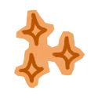

Las herramientas, prompts y metodología que usaría para aprender mucho más rápido.
La usan como Google
Prueban una herramienta distinta todos los días
Consumen contenido pero nunca construyen nada
"La IA se aprende haciendo proyectos, no mirando videos."
{{ step.label }}
{{ step.example }}
{{ tool.name }}
{{ tool.desc }}
Marcá cada paso a medida que lo hacés.